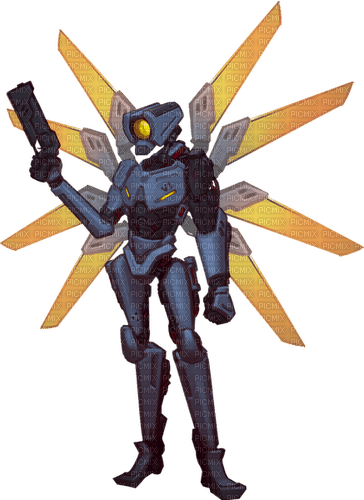
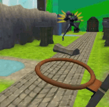

Ultrakill, the psychedelic indie fps/horror game in which you are a machine (v1) with the sole purpose of killing sinners in hell, but don't let it's simple premise get to you since this game has a lot to offer (even though it hasn't yet been fully released);
This game was inspired by games like Doom and the famous story of "Dante's Inferno" and as such takes place in hell and is divided in 3 "chapters"/9 "parts": Limbo, Lust, Gluttony, Greed, Wrath, Heresy, Violence, Fraud, and Treachery (3 per chapter) + Prelude even though only up to "Violence" has been released.
The Gameplay is not much different from other off-line fps's, but the constant unexpected wave of enemies,bosses that become "normal foes" and other aspects made this into one of the best indie games of all time
